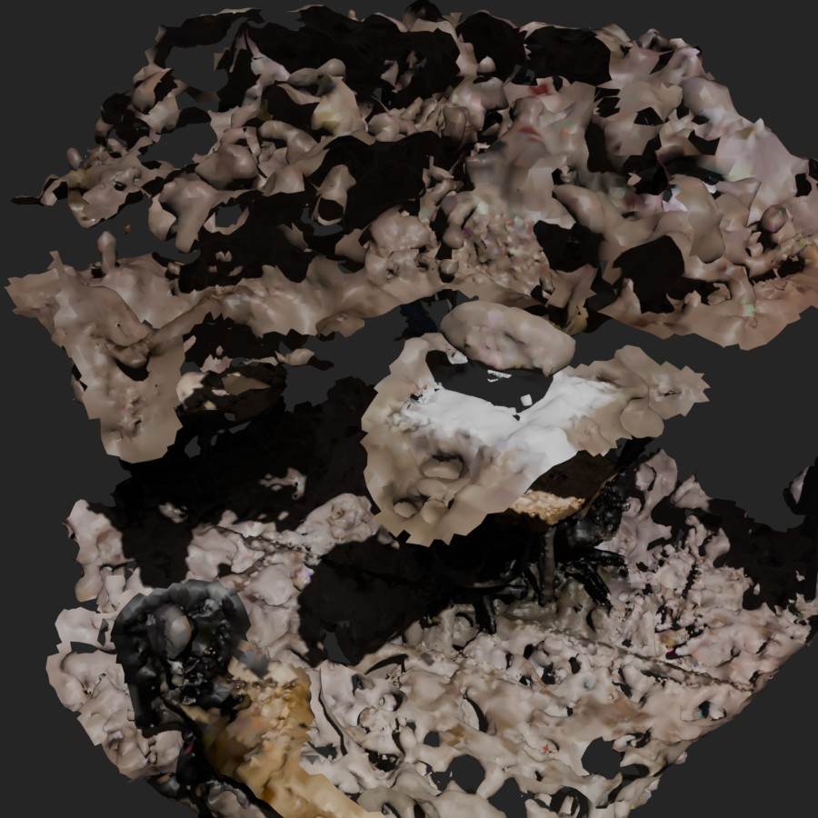
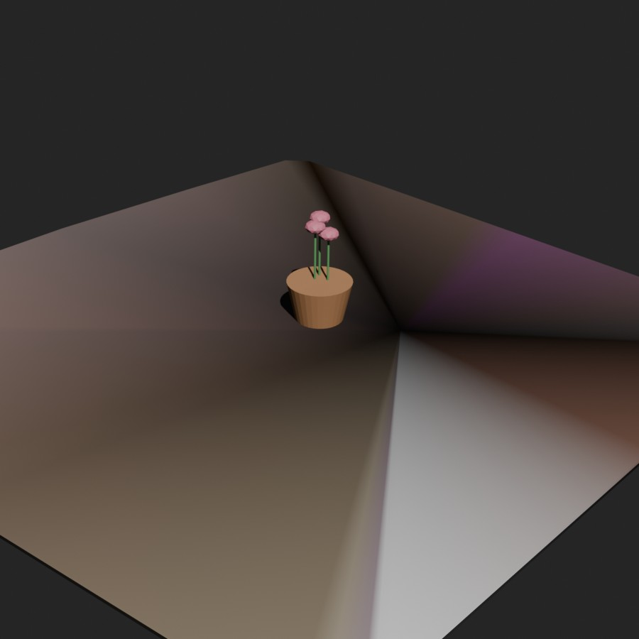
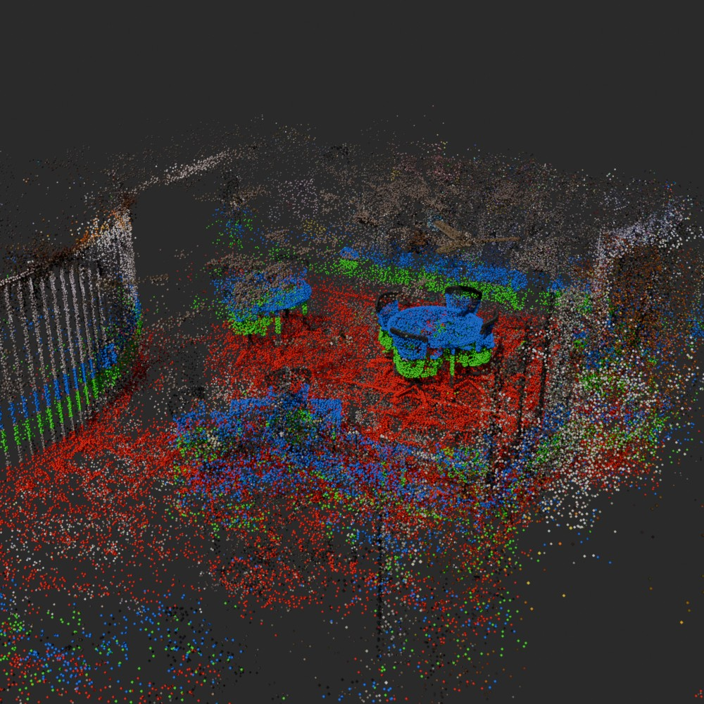
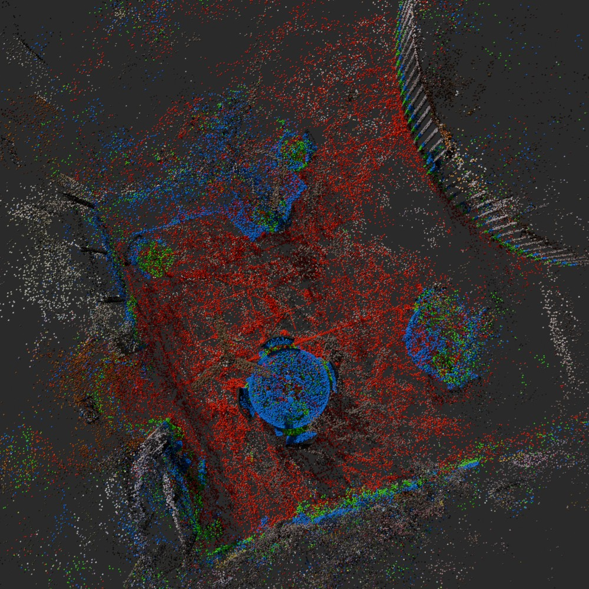
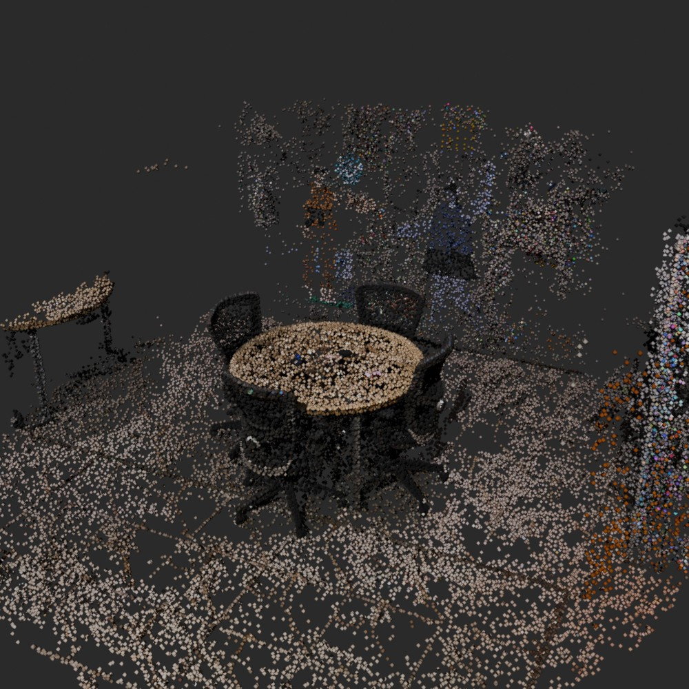
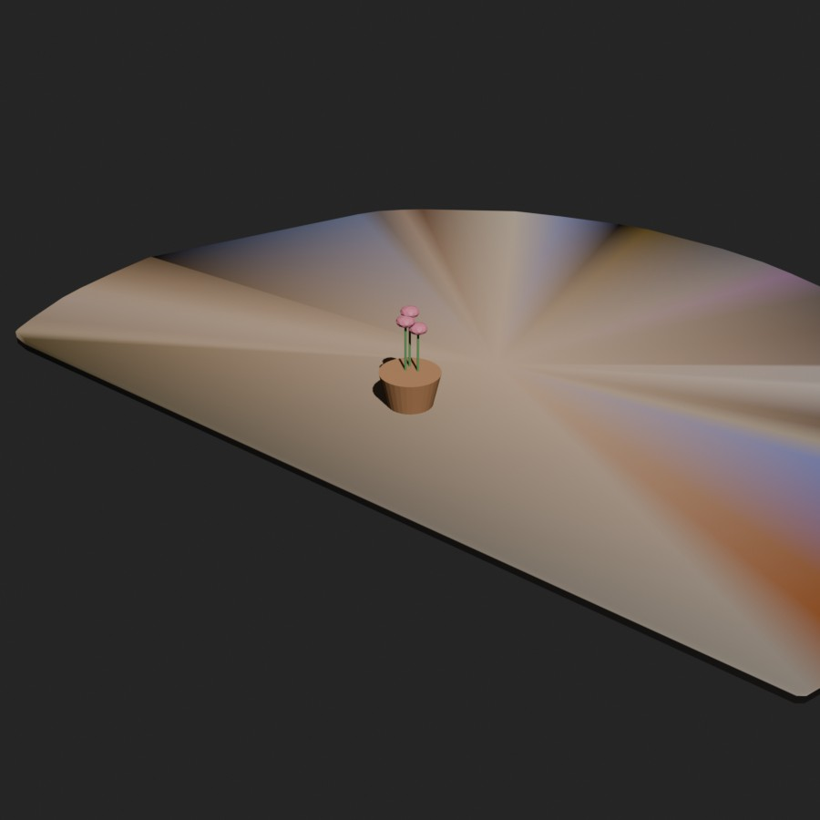
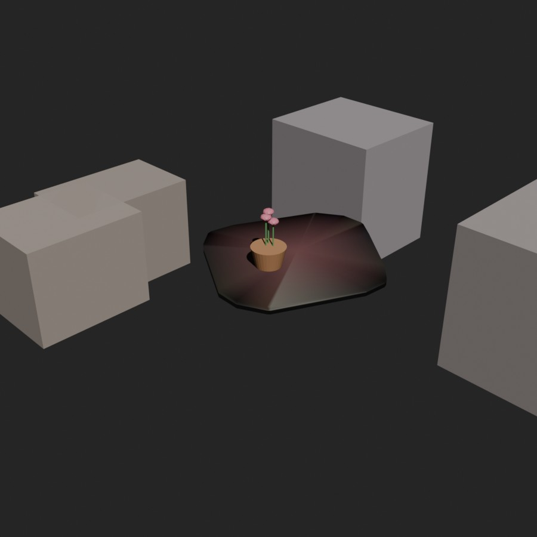

EXP-006: SuperSplat Crop → Blender → USD Scene Assembly (Flower Pot on Table)¶
Owner: Tushar Vaidya Start Date: 2026-09-10 Last Updated: 2026-09-10 Status: Active — manual-crop pipeline complete; fully automatic table+chairs detection (no SuperSplat, no manual selection) working end-to-end, table+chairs+flower-pot all present in the final USD, at the scene's real internal scale
Goal¶
Take a 3D Gaussian Splat reconstructed in EXP-005 (cam4 single-camera pipeline), isolate a table of interest, bring it into Blender, correctly determine "which way is up," place an object (a flower pot) on the table surface, and export the combined scene as USD — targeting Isaac Sim / robot-sim asset workflows. Two variants were built: first a manual SuperSplat box-crop, then a fully automatic pipeline operating directly on the original uncropped trained splat.
Hypothesis¶
- A splat crop exported from SuperSplat can be converted into usable Blender/USD geometry via Poisson surface reconstruction directly on the Gaussian point cloud.
- The crop's up-axis and table-surface location can be recovered reliably via RANSAC plane fitting, without needing to eyeball orthographic renders.
- The table (and its surrounding chairs) can be found and cropped automatically, directly from the full uncropped trained splat, without any manual SuperSplat selection — using only the scene's own geometry and the known camera trajectory as priors.
(1) turned out to be false in an interesting way for a room-scale crop — see Results. (3) turned out to be true, but required abandoning several purely-statistical classification heuristics in favor of a direct visual check — see Method §5.
Background¶
SuperSplat: select box around table → crop → export .ply
↓
splat-edited.ply (132,900 Gaussians, INRIA/gsplat PLY format)
↓
Gaussian → point cloud + per-Gaussian normal (shortest scale axis, in world frame)
↓
RANSAC plane fit → identifies "up" axis + tabletop surface
↓
Table geometry (mesh or slab) + procedural flower pot, placed on the fitted plane
↓
Blender scene assembly → USD export (bpy.ops.wm.usd_export)
Key constraint discovered up front: SuperSplat's box-crop export renormalizes the selection into a canonical [-1, 1] unit cube with no recoverable transform back to the original splat's world/metric scale. This has no effect on shape or orientation recovery, but it means the exported geometry is dimensionless — real-world scale has to be reintroduced manually downstream (e.g. in Isaac Sim, by comparing to a known object/table dimension).
Method¶
1. Determining "up" — RANSAC plane fit, not eyeballing¶
The first instinct — rendering three orthographic views (+X, +Y, +Z) of a candidate mesh and eyeballing which one looks like a tabletop — wasn't reliable enough on a noisy reconstruction to be confident. Instead, open3d.geometry.PointCloud.segment_plane was run directly on the cropped Gaussian centers:
plane_model, inliers = pcd.segment_plane(distance_threshold=0.01, ransac_n=3, num_iterations=2000)
Result:
plane normal: [-0.0024, 0.0175, 0.9998] ≈ (0, 0, 1) — Z is up
plane offset d: -0.6048
inliers: 14,941 / 132,900 (11.2%)
inlier bbox: X [-1.000, 1.000] Y [-1.000, 1.000] Z [0.574, 0.637]
inlier centroid: [0.258, 0.217, 0.602]
other-points side: 81.2% lie on the negative-normal side of the plane
This is clean, non-eyeballed evidence: the inlier set is a broad, thin (0.063-unit-thick) disk spanning almost the entire X/Y footprint of the crop — exactly the shape of a tabletop — while 81% of everything else (floor, chairs, room) sits below it along the fitted normal. Z-up was confirmed, the tabletop plane was located, and the "open" placement side (positive-Z) was identified with actual evidence rather than a visual guess.
2. First geometry attempt: Poisson reconstruction of the whole crop — failed¶
The initial approach treated every kept Gaussian (opacity > 0.15, flatness < 0.5 — disk-like Gaussians only) as an oriented point (using the Gaussian's own shortest-scale axis as its normal, rather than blind kNN normal estimation) and ran Poisson reconstruction over the entire crop:
mesh, densities = o3d.geometry.TriangleMesh.create_from_point_cloud_poisson(pcd, depth=9)
Result: 381,736 vertices / 750,061 triangles — but visually, a chaotic, spiky, camouflage-like blob (table, chairs, floor and room all fused into one watertight surface by Poisson's global reconstruction, which doesn't distinguish "this cluster is a flat table" from "this cluster is clutter"). See the first figure below. Reconstructing an entire cluttered, sparse, room-scale point cloud into one watertight surface is the wrong tool for this — Poisson works well on a single coherent object with enough sample density, not a heterogeneous room scene.

3. Fix: build a clean slab directly from the RANSAC plane inliers¶
Rather than reconstructing everything, the already-identified plane-inlier points (Step 1) were used directly: projected into the plane's local 2D basis, a convex hull was computed (scipy.spatial.ConvexHull), shrunk 3% inward to avoid boundary outliers, then extruded into a thin (0.02-unit) solid slab (fan-triangulated top/bottom caps + side walls), with vertex colors nearest-neighbor-sampled from the original Gaussian colors.
Result: a clean 46-vertex / 88-triangle solid table-top proxy — accurately shaped (the crop's XY footprint was itself roughly diamond/square, so the hull comes out as a rotated quad), correctly oriented, and immediately usable in Blender/USD. This is the approach that should be used going forward for any single-planar-surface object extracted from a splat crop; full Poisson reconstruction should be reserved for genuinely non-planar single objects.
4. Scene assembly + placement¶
A procedural flower pot (cone-shaped pot body + soil disk + 3 stem-and-petal clusters, all built with Blender primitives — no external asset library was available in this environment) was placed with its base flush against the fitted plane, at a world XY position offset slightly from the inlier centroid for a more natural composition, oriented so its local up-axis matches the fitted plane normal (mathutils.Vector.to_track_quat). Lighting (sun + world ambient) and a camera were added, the scene rendered for visual verification, then exported via bpy.ops.wm.usd_export.

5. Fully automatic table + chairs detection (no SuperSplat)¶
A follow-up removed the manual SuperSplat box-select entirely, operating directly on the full trained export/splat.ply (336,682 Gaussians, un-cropped, un-renormalized — still in nerfstudio's own consistent internal scale). This also incidentally fixes the "no recoverable scale" caveat above: since nothing gets independently renormalized per-crop, the floor, chairs, table, and camera trajectory all stay in one consistent coordinate system.
Step 1 — "up" from the camera trajectory, not from plane RANSAC. A person walking a rig varies X/Y a lot but height very little. Loading the 121 COLMAP camera centers (transformed into the splat's frame via nerfstudio's dataparser_transforms.json) and taking the smallest-variance principal axis of their positions gives the vertical axis directly and deterministically — no RANSAC stochasticity involved. Camera height varied only ±0.008 units across the whole 121-frame walk while X/Y ranged ±0.84/±0.99 — a strong confirmation the recovered axis is correct.
Step 2 — floor/chair/table height peaks, found the wrong way first. Projecting all Gaussians onto that vertical axis and histogramming produced three clear height peaks. Two different automatic classification heuristics were tried to label them (footprint size via bounding-box area, then via true convex-hull area; "floor = biggest footprint" and separately "floor = furthest below mean camera height") — both gave internally-contradictory or implausible answers (one run even placed the "floor" above the "table" in height, which is physically impossible). Rather than layering on a third heuristic, the three height-bands were simply color-coded red/green/blue and rendered from an oblique angle.


This settled it immediately and correctly: red = floor, green = chairs, blue = tabletops — exactly matching "table or table chairs" from the original ask, and directly confirming both of EXP-005's "two tables" are present and visible in this reconstruction. The lesson: a single rendered image resolved in seconds what two rounds of statistical heuristics (footprint area, point density, height-below-camera) got wrong or contradicted each other on.
Step 3 — isolate and crop one table + its chairs. The tabletop-height points were clustered with open3d's DBSCAN (eps=0.08, separating the two round tables), the larger/more complete cluster (8,133 points) was selected, and a generous cylinder (2.6× the table's radius, floor-height to just above tabletop-height) was cropped directly out of the full-precision splat — no opacity or other filtering applied to the exported crop itself, only to the points used for detection.

Step 4 — same slab + placement pipeline as before. The convex-hull-slab method (§3) was re-run on this crop's own table-height inliers (76 verts / 148 tris), and the same flower-pot placement + USD export script (§4) was re-run against it.

Step 5 — the chairs were missing, and fixing that surfaced two more bugs. The pipeline above cropped the table and its surrounding chairs into auto_table_crop.ply, but the scene-assembly script only ever pulled the table-height points back out to build the slab — the chair-height and floor-height points were sitting unused in the crop file the whole time, and never got turned into scene geometry. This was a straightforward oversight, not caught until directly asked "why does the final scene not have table and chairs."
Fixing it took two more rounds:
- First attempt: Poisson-reconstruct each chair separately. The reasoning was that a single isolated chair, unlike the whole room (§2), is a small coherent object — exactly what Poisson is supposed to be good at. In practice this still produced noisy, spiky, unusable geometry (thin legs and mesh backrests are much harder to reconstruct than a flat tabletop, and get far less point coverage since the camera lingered on the tables specifically, not the chairs). Same underlying failure mode as §2, just scoped to one object instead of the whole room — Poisson needs denser, more complete sampling than these chairs actually have.
- Fix: oriented bounding-box proxies instead, one box per chair (
center,half_extentalong the table's own localu/w/normal axes, mean color) computed directly from each chair's full point extent (floor to above seat height) — no reconstruction algorithm at all, same "skip reconstruction, use a simple geometric approximation" pattern that fixed the table in §3.
A second, related bug also surfaced once chairs were in the scene to compare against: the table slab's convex hull was visually overlapping the chairs. Cause: the hull was built from every table-height-band point anywhere in the crop, with no horizontal radius limit — it had quietly absorbed a few stray same-height points beyond the true round tabletop, making the hull bleed outward. Fixed by clipping the hull's input points to within 1.15× the table's own DBSCAN cluster radius (§ Step 3) before computing the hull, dropping it from 76 to 52 vertices and pulling the boundary back to the real tabletop extent.

Impediments¶
Current Blockers
- ~~No recoverable real-world scale~~ — resolved for the automatic pipeline (§5): operating directly on
export/splat.plykeeps floor, chairs, table, and camera trajectory in one consistent internal scale, since nothing gets independently renormalized per-crop. Still not real-world meters though — that still needs a known physical dimension (e.g. measured table height) to convert nerfstudio's internal units to metric, for either pipeline. - The manual SuperSplat crop path still renormalizes to
[-1, 1]with no recoverable transform — use the automatic pipeline (§5) instead when metric consistency across objects/scene matters - Table surface has flat/gradient shading, not the original splat texture — only a few dozen hull vertices carry color, so large faces interpolate between a handful of samples instead of showing real detail (wood grain, etc.) — true of both pipelines
- Flower pot is procedural placeholder geometry, not a real asset — no Isaac/Omniverse asset library was confirmed available in this environment
- ~~The automatic pipeline (§5) only isolates one table; the chairs and floor context it also crops are not yet turned into their own clean geometry~~ — chairs fixed (§ Step 5): now represented as oriented bounding-box proxies. Floor still not modeled as its own geometry.
- Chairs are coarse bounding-box proxies, not real chair shapes — fine for layout/collision purposes, not for visual fidelity; their color is a flat mean over each box's points, so it reads as muddy grey rather than the chair's actual appearance
Known Risks
- The convex-hull-slab approach only works for objects that are genuinely planar (or close to it) in the crop; it is not a general splat-to-mesh solution — a non-planar object of interest would still need proper (and likely per-object, not per-scene) Poisson or other surface reconstruction
blender --background --pythonrequires absolute output paths — a relative render/USD path silently resolves against Blender's internal state, not the shell's cwd, and fails with a non-obvious "No such file or directory"- Purely statistical height/footprint heuristics for classifying floor vs. chairs vs. table were unreliable on this scene (see §5) — any future automatic classification on a new capture should budget for a quick visual sanity-check render, not trust the first heuristic that runs without error
- Poisson reconstruction's failure mode isn't confined to whole-room crops — it also produced unusable noisy geometry on a single, already-isolated chair (§ Step 5), so "isolate the object first" alone doesn't guarantee Poisson will work; point-density/coverage on the object itself matters too
- A convex hull built from a height-band alone, with no horizontal radius limit, can silently absorb stray same-height points from elsewhere in the crop and bleed past the true object boundary — worth radius-clipping against an independently-known object extent (e.g. a clustering result) whenever one is available, not just trusting the raw hull
Evaluation Protocol¶
- Metric: qualitative — visual correctness of up-axis, table shape, and object placement (no ground-truth pose available); USD round-trip verified by re-importing the exported file into a fresh Blender session and checking object transforms
- Real environment: same office scene / table as EXP-005's
cam4single-camera splat
Results¶
Plane fit: normal (-0.0024, 0.0175, 0.9998) ≈ Z-up, 14,941/132,900 inlier points, inlier bbox spans nearly the full crop in X/Y and only 0.063 units in Z — confirms a broad, thin, horizontal tabletop.
Poisson-on-everything: 381,736 verts / 750,061 tris, visually unusable (chaotic blob fusing table + room clutter).
Plane-inlier convex-hull slab: 46 verts / 88 tris, clean, correctly shaped and oriented, immediately usable.
USD export: table_with_flowerpot.usd, 42 KB binary Crate format, round-trips cleanly through Blender's USD importer — flower pot object recovered at (0.05, 0.10, 0.663), flush with the slab surface at the requested XY.
Deliverables — manual SuperSplat-crop pipeline (/data/fast/workspaces/tushar/alia16k_capture2/cam4_single/blender_pipeline/):
| File | Description |
|---|---|
build_table_slab.py |
Builds the clean convex-hull table slab from RANSAC plane inliers |
build_scene.py |
Assembles table + flower pot + lighting + camera, renders preview, exports USD |
table_slab.ply |
Table proxy mesh (46 verts / 88 tris) |
table_with_flowerpot.usd |
Final exported scene |
scene.blend |
Editable Blender scene |
Fully automatic pipeline (§5) — results¶
Vertical axis (from camera trajectory PCA): (-0.0016, 0.0055, 1.0) — camera height varied only ±0.008 units across 121 frames vs. ±0.84/±0.99 in X/Y, strongly confirming the axis.
Height classification (visually confirmed, not purely statistical): floor height ≈ −0.595, chair-seat height ≈ −0.385, tabletop height ≈ −0.249 (all in the scene's internal units).
Table clustering: DBSCAN on tabletop-height points found 10 clusters (both round tables plus smaller unrelated surfaces); the largest, cleanest cluster (8,133 points, radius ≈ 0.42) was selected.
Crop: cylindrical crop (radius 1.09, floor-to-above-table height band) around the selected table pulled 65,475 / 336,682 Gaussians directly from the full-precision splat, visually confirmed as one round table with 4 office chairs and floor.
Table slab (final, radius-clipped): 52 verts / 100 tris — down from an initial 76/148 before the hull-overlap fix (§ Step 5).
Chairs: 4 DBSCAN seat clusters kept (out of 5 found — the 5th, at distance ≈0.006 from the table center, was the table's own pedestal base, correctly excluded by a minimum-distance filter), each represented as an oriented bounding-box proxy: half-extents roughly 0.17–0.28 units along the table's local axes, positioned 0.94–1.04 units from the table center.
USD export (with chairs): table_with_flowerpot_auto.usd, 44.9 KB, round-trips cleanly — flower pot recovered at (0.125, 0.183, -0.212) flush with the table, all 4 chair boxes recovered at their correct positions/heights, table/light/camera all present.
Deliverables — automatic pipeline (same directory):
| File | Description |
|---|---|
auto_find_table3.py |
Deterministic vertical-axis + height-peak detection (camera-trajectory PCA + histogram) |
render_diagnostic.py / render_diagnostic_views.py |
Color-codes height bands and renders them for visual classification |
auto_crop_table.py |
DBSCAN table clustering + cylindrical crop from the full splat |
auto_table_crop.ply |
Cropped table + chairs + floor, full precision, real internal scale (65,475 Gaussians) |
build_table_slab_auto.py / table_slab_auto.ply |
Convex-hull table slab from the auto-detected crop, radius-clipped to the table's own cluster extent |
build_chairs_auto.py / chair_boxes.json |
DBSCAN chair-seat clustering + oriented bounding-box proxy per chair (after per-chair Poisson failed) |
build_scene_auto.py / table_with_flowerpot_auto.usd / scene_auto.blend |
Final automatic scene assembly (table + chairs + pot) + USD export |
Lessons Learned¶
- Poisson reconstruction is the wrong tool for a whole cluttered scene crop. It works well on a single coherent, well-sampled object; pointed at an entire room-scale crop (table + chairs + floor mixed together) it fuses everything into one chaotic watertight blob. Isolate the object of interest first (here, via the RANSAC plane) and reconstruct only that.
- A RANSAC plane fit is a much better "which way is up" signal than eyeballing orthographic renders, especially on noisy reconstructions — it's fast, quantitative, and also directly locates the surface (inlier centroid/bbox), not just the orientation.
- SuperSplat's crop export silently discards world scale. Any downstream pipeline that needs metric units (robot-sim placement, physics) has to reintroduce a scale factor manually — there's no metadata to recover it automatically.
- For a genuinely planar object of interest, skip mesh reconstruction of raw points entirely — projecting inlier points into the plane's local 2D basis and convex-hull-extruding is faster, cleaner, and more robust than any point-cloud reconstruction algorithm for that specific shape class.
- Blender headless scripts need absolute paths for render/export filepaths — a relative path resolves against unexpected internal state and fails with a misleading "No such file or directory" rather than an obviously-relative-path error.
- A walking camera's own trajectory is a strong, free prior for finding "up." Height varies almost not at all during normal walking capture while horizontal position varies a lot — the smallest-variance axis of the camera positions is a precise, deterministic vertical-axis estimate, with no RANSAC randomness and no dependence on scene content at all.
- Statistical classification heuristics (footprint area, point density, height-below-camera) were each individually plausible but gave contradictory or physically-impossible answers when applied to real, imperfect reconstruction data (a "floor" peak once came out above a "table" peak). A single color-coded diagnostic render resolved the ambiguity immediately and should be the default first move for any future automatic scene-element classification, not a last resort.
- Reconstructed floor point density does not reliably track "this is the floor." A camera-path walking surface can be reconstructed just as densely as a heavily-photographed tabletop — density alone is not a safe floor/table discriminator on its own.
- Working directly on the original, uncropped trained splat instead of a SuperSplat export avoids an entire class of downstream problems (renormalized scale, no recoverable transform) for free — worth defaulting to this path whenever the object of interest can be found programmatically, reserving manual SuperSplat cropping for cases where automatic detection genuinely can't isolate the right region.
- A crop containing everything needed doesn't mean the scene-assembly script actually uses all of it.
auto_table_crop.plyhad the chairs and floor in it from the start; they simply never got read back out into the Blender scene. Cropping the right data and consuming all of it are two separate steps, worth checking independently rather than assuming success once the crop looks right. - "Isolate the object first" is necessary but not sufficient for Poisson to work well — it also failed on a single, already-isolated chair, not just the whole room. The determining factor is point density/coverage on the object itself, not just how cleanly it's separated from everything else.
- A DBSCAN or clustering result's own extent is a good, principled radius to clip a related-but-separately-built piece of geometry to — the table hull's overlap with the chairs was fixed by reusing the table cluster's own radius (already computed during cropping) as a clip bound, rather than inventing a new threshold.
- A cluster essentially at distance zero from another object's center is probably that object's own structure, not a neighboring one — the 5th "chair" candidate was actually the table's own pedestal base; a simple minimum-distance filter caught it immediately once checked.
Next Steps¶
- Reintroduce true real-world (metric) scale for the automatic pipeline too — internal-scale consistency is solved, but converting to meters still needs one known physical measurement (e.g. actual table height) as an anchor
- Replace the procedural flower pot with a real USD asset from an Isaac/Omniverse asset pack, using the same placement logic (plane normal + centroid)
- If visual fidelity of the table surface matters (not just shape/placement), bake a texture from the original splat imagery instead of relying on sparse per-vertex hull colors
- Generalize the "RANSAC plane → convex-hull slab" approach into a reusable utility for any future splat-to-sim-asset conversion of planar surfaces (desks, floors, shelves)
- Test the exported USD directly in Isaac Sim (rigid-body setup, collision mesh from the slab and chair boxes) rather than only verifying the round-trip through Blender
- Turn the floor (already isolated in
auto_table_crop.ply, not yet used) into its own geometry for a fuller sim-ready scene - Improve chair fidelity beyond bounding boxes — e.g. try Poisson again with a higher-resolution/denser recapture of the chairs specifically, or source real chair assets, since the current proxies lose shape and give a flat/muddy color
- Apply the automatic (§5) pipeline to the second detected table/round cluster, and to the second physical table from EXP-005, to check the method generalizes rather than having been tuned to one lucky case
References¶
- Source splat: EXP-005 —
cam4single-camera pipeline, HD tier (PSNR 21.02 / SSIM 0.917 / LPIPS 0.190) - SuperSplat (PlayCanvas 3DGS editor) — used for the manual box-crop selection and
.plyexport in §1–4 pycolmap— used in §5 to load camera poses for the trajectory-based vertical-axis estimate, combined with nerfstudio's owndataparser_transforms.jsonto bring them into the splat's coordinate frame- Blender 5.2.1 LTS headless (
bpy),open3d0.19.0,scipy1.15.3 — all run inside thegsplatdistrobox container's nerfstudio venv (/home/tushar/codes/nerfstudio/.venv)